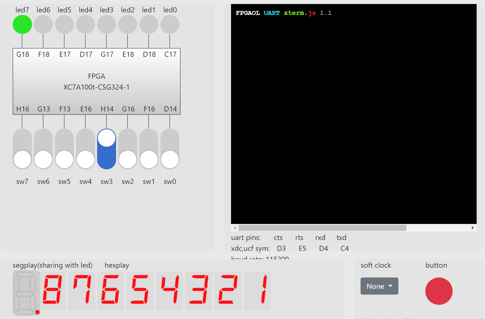
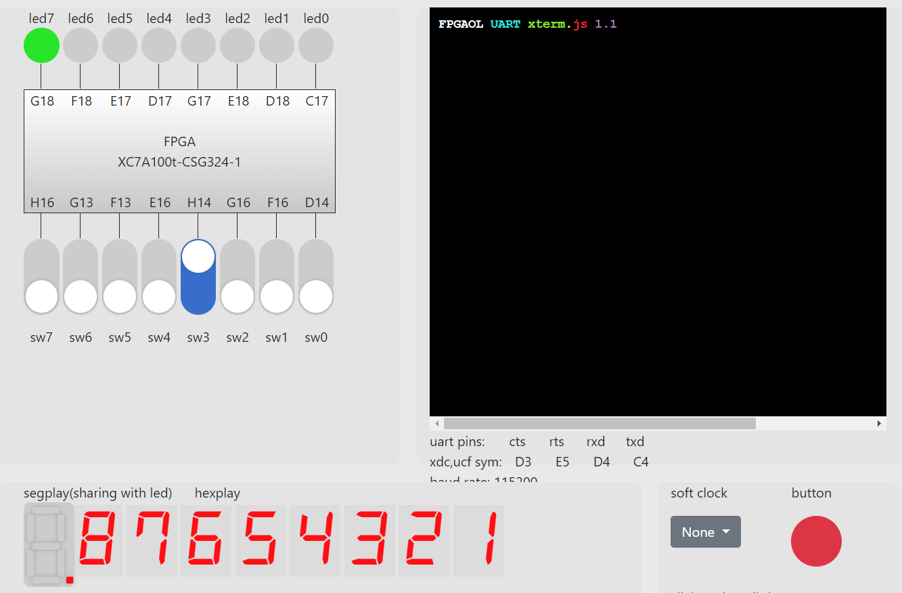

verilog代码
异步信号取边沿(SEDG)
module SEDG(
input a,
input clk,
output p
);
reg st, pt, s;
always@(posedge clk)
st <= a;
always@(posedge clk)
s <= st;
always@(posedge clk)
pt <= s;
assign p = (~pt) & s;
endmodule
寄存器文件(RF)
module register_file(
input clk,
input [2:0] ra0,
output [3:0] rd0,
input [2:0] ra1,
output [3:0] rd1,
input [2:0] wa,
input we,
input [3:0] wd
);
reg [3:0] regfile[0:7];
assign rd0 = regfile[ra0];
assign rd1 = regfile[ra1];
always@(posedge clk) begin
if (we == 1)
regfile[wa] <= wd;
end
endmodule
数码管显示单元(SDU)
module SDU(
input rst, clk,
input [3:0] rd,
input [7:0] valid,
output [2:0] ra,
output [2:0] an,
output [3:0] seg
);
reg [23:0] count;
assign an = ra;
assign ra = count[12:10];
always@(posedge clk)
begin
if (rst) begin
count <= 24'd0;
end else begin
count <= count + 1;
end
end
assign seg = valid[ra] ? rd : 0;
endmodule
队列控制单元(LCU)
module LCU(
input clk, rst,
input [3:0] in, rd0,
input enq, deq,
output reg [3:0] out,
output full, emp, we,
output [2:0] ra0, wa,
output [3:0] wd,
output reg [7:0] valid
);
assign wa = tail;
assign wd = in;
assign we = enq;
assign ra0 = head;
parameter IDLE = 2'b00;
parameter ENQU = 2'b01;
parameter DEQU = 2'b10;
reg [1:0] cs, ns;
reg [2:0] head, tail;
reg [3:0] count;
always@(posedge clk) begin
if (rst == 1)
cs <= IDLE;
else
cs <= ns;
end
always @(*) begin
case (cs)
IDLE: begin
if (enq & !full)
ns <= ENQU;
else if (deq & !emp)
ns <= DEQU;
else
ns <= IDLE;
end
ENQU: ns <= IDLE;
DEQU: ns <= IDLE;
endcase
end
always@(posedge clk)begin
if (rst == 1) begin
tail <= 0;
head <= 0;
valid <= 0;
count <= 0;
out <= 0;
end
else if (cs == ENQU) begin
valid[tail] <= 1;
tail <= tail + 1;
count <= count + 1;
end
else if (cs == DEQU) begin
valid[head] <= 0;
head <= head + 1;
count <= count - 1;
out <= rd0;
end
end
assign full = (count == 4'd8) ? 1 : 0;
assign emp = (count == 4'd0) ? 1 : 0;
endmodule
顶层模块
module fifo(
input clk, rst,
input enq,
input [3:0] in,
input deq,
output [3:0] out,
output [2:0] an,
output [3:0] seg,
output full,emp
);
wire [2:0]ra0, ra1, wa;
wire [3:0]rd0, rd1, wd;
wire we_0,we;
wire enq_edge;
wire deq_edge;
wire [7:0] valid;
wire [3:0] out_;
SEDG edg_enq(enq, clk, enq_edge);
SEDG edg_deq(deq, clk, deq_edge);
LCU LCU(clk, rst, in, rd0, enq_edge, deq_edge, out_, full, emp, we_0, ra0, wa, wd, valid);
register_file regfile(clk, ra0, rd0, ra1, rd1, wa, we, wd);
SDU SDU(rst, clk, rd1, valid, ra1, an, seg);
assign we = (full == 1) ? 0 : we_0;
assign out = (emp == 1) ? 0 : out_;
endmodule


 
